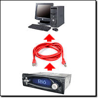

| |

rio car dot org FAQ (Frequently Asked Questions)
Category: Main -> Networking and home connection questions
| Answer | · I don't have a serial port on my PC. Is the serial port required?
(Entry last updated on October 1st, 2010)The serial port is not required to load music onto the player. In fact, USB and Ethernet are the preferred methods because they are much faster.
However, the serial port is required whenever you upgrade the player software. It's also the only way you can send custom logos or kernels to to the player. And if you intend to do any software development for the player, you can't even get started without the initial serial connection. The serial port is also very useful for troubleshooting.
If your computer has only USB ports, there are USB-to-serial adapters available which should work in theory, but it has been reported that it's hit-and-miss as to whether a given adapter will actually work or not. Also, if you have a desktop computer with a free ISA or PCI slot, you can add an inexpensive serial card to your computer.
If your computer is a laptop with a PCI-Express slot, search around the internet for PCI-E-to-serial adapters with the keywords "Oxford Chipset". These will be more likely to work with the player than the USB-to-serial adapters.
As a last resort, you could perform your software upgrades on a friend's PC if it had serial ports. Back to Top
| · Which is faster, USB or Ethernet?
(Entry last updated on February 16th, 2002)For loading music onto the car player, Ethernet is faster. Some people report that it's up to twice as fast as USB, or faster.
But isn't USB 12mbps? That should be 20% faster than the 10mbps ethernet on the car player.
And if we lived in a perfect world of blue skies, flowers and little fluffy bunnies, manufacturers wouldn't over-inflate hardware specifications.
USB is interrupt-driven and has a lot of overhead in its protocol, making it very CPU-bound. As a result, USB doesn't approach its theoretical maximum as often as ethernet does. Back to Top
| · How do I hook up the player with ethernet?
(Entry last updated on October 24th, 2008)Setting up an ethernet network at home can be tricky. Many have done it, and once you understand how networks work, there are many benefits to having a home LAN. However, you should make sure you've got a working network in place before adding the car player to the mix. I don't recommend using the car player as your first network troubleshooting project.
Once you've got a multi-computer network running, then the car player can be treated the same as you would treat any other computer being added to an existing network.
This text assumes that you're doing the basic step of reading the manuals that came with all of your networking gear, such as the manual that came with your ethernet card or your hub. I'm not going to tell you exactly where to click in Windows to set your IP address, that belongs in the manual for your ethernet card.
Here are a few examples of the most common ways you can connect the car player to a network:
Through a hub or a switch (recommended)
 |
In this configuration, the PC (or multiple PCs) and the car player are connected to an ethernet hub or switch with standard "straight-through" 10baseT network cables. This, of course, requires that the PC has an ethernet adapter card installed and working.
The difference between a "hub" and a "switch" is rather subtle and technical. For the purposes of hooking up the car player, hubs and switches can be considered to be pretty much the same thing. They look the same on the outside and serve the same function, which is to connect multiple computers on the same LAN. Switches are generally faster, and are therefore sometimes more expensive to buy, but even switches are pretty cheap these days. Although just about any hub or switch should work, there have been a few documented cases of the car player being incompatible with certain switches, so if you're using a fast switch, you might need to daisy-chain a basic 10baseT hub between the car player and the switch to get it working.
The IP addressing scheme of the computer and the car player will depend on how you want the network configured. You can either set fixed IP addresses for all the devices, making sure they all have unique addresses in the same subnet as described here, or you can configure everything to obtain an IP address automatically, which is the default setting. Automatic addressing is usually only used when you've got a DHCP server on the network (a device that assigns addresses, for instance, a cable modem or DSL router may double as a DHCP server), but usually you can configure the devices as "automatic" and they'll still work even without a DHCP server. The latter works because recent versions of the Windows operating system will drop back to a randomly-selected UPNP (universal plug and play) address in the absence of a DHCP server, and so will the car player.
If setting fixed IP addresses yourself, use addresses either in the range of 192.168.0.x, or 10.x.x.x. These are the most common addressing schemes for local LANs, and will guarantee that the addresses never conflict with the public internet when you connect to it.
|
Direct connection with a crossover cable (recommended only if you don't have a hub)
|  |
If you don't have a hub, and you don't have any reason to connect your computer to other computers or to a broadband internet link, you can use this method to connect the car player directly to your PC's ethernet card. Since hubs are dirt-cheap and can be found at any computer store, the hub option is better. Hubs allow you to connect multiple computers to the same network and take advantage of all of the features networks have to offer.
The most important thing to remember is that this requires a special "crossover" network cable in order to work. These can be purchased at most computer stores, but are more rare than the regular kind of network cable. If you don't know whether your cable is a straight cable or a crossover cable, you have to look closely at the wire pairs and determine the pinouts as described on this page.
If you use this connection method, all the things previously mentioned about fixed IP addresses still counts. This configuration has no DHCP server, and the two devices must both have addresses in the same subnet.
|
Connected to a DSL or Cable Modem
 |
If you're connected to the internet through a DSL modem or a Cable modem, check to make sure that the modem has a built-in NAT router/firewall feature to protect your home network from crackers. Most modern DSL and Cable modems have this feature. Such devices combine several functions into one little box: The DSL/Cable modem, a NAT (Network Address Translation) router/firewall, and a DHCP server. Some even include built-in hubs/switches or wireless access points.
Pictured at left is a situation where each of those functions is handled by a different device, but you might have a single device that does all of those functions.
Even if your DSL/Cable router has a built-in hub/switch, you still might need an extra hub if you're working around an incompatibility problem with certain switches as described here.
In this configuration, the router acts as the DHCP server, and the computers and the car player should be configured to get their IP addresses automatically from the DHCP server.
I don't recommend sharing the car player on the internet through your cable/DSL connection. It's (a) dangerous if you don't know what you're doing, and (b) potentially illegal if you're doing it for the purpose of sharing copyrighted music. But if you know what you're doing, you can set up either port forwarding or a DMZ on your router to accomplish this. Consult the documentation that came with your router for details. Just remember that almost anything exposed to the internet which isn't behind a NAT layer or a firewall can be hacked.
|
There are other ways to connect the car player to a network, but these are the simplest and most common methods. More complicated schemes are best left to those who are experts at configuring networks. If you still have trouble when using one of these simple schemes, check the troubleshooting steps described here.
Once you've got ethernet working, you can press the Options button in the first screen in Emplode and select the "Network Broadcast" and/or the "Specific Address" option to connect to the car player. You can also get fancy and try connecting to it with a web browser or an FTP client.Back to Top
| · Why can't I get ethernet to work?
(Entry last updated on April 13th, 2008)There are about 6.8 billion different reasons why ethernet might not work. Most of them aren't the fault of the player, rather, they are problems with your network configuration.
Troubleshooting ethernet connections is a tricky business for professionals, let alone newbies. If you're setting up ethernet for the first time just for the purpose of connecting to the Rio Car, my advice is to forget it and just use the USB port. You really should have a working LAN in place for other reasons (such as file and printer sharing or broadband internet access sharing) before you even think about plugging in the car player. The car player doesn't work well when you try to use it as a network troubleshooting tool; if the network isn't working to begin with, trying to get the car player working "first thing" is just going to confuse the issue.
With that said, here are some common reasons ethernet might not work on your player:
- You're using some kind of an advanced connection scheme, above and beyond one of the basic connections. Try getting the player to work using one of these simple connection schemes first. You can complicate it later, once you're sure the basic connectivity is working.
- You're plugging it into a 100-megabit hub, router, or switch. The car player only works on 10baseT. If you want it to participate on a 100baseT network, it must be plugged into a device with 10/100 autosensing ports.
- Sometimes even autosensing ports aren't enough. You might have to "force" the port into 10mbps half-duplex mode on some switches. If your router or switch doesn't let you do this, check to see if things work on a separate 10mbps-only hub.
- Some popular DSL/Cable routers are capable of having their firmware replaced with the freeware DD-WRT firmware. In some cases, this can allow you to configure the 10/100 autosensing mode of the individual ports on the router, whereas the factory firmware wouldn't allow you to do that.
- Sometimes even forcing it into 10mbps mode is not enough. It has been reported that certain 10/100 hubs/switches/routers simply refuse to work with the car player. Just because the link lights appear and the '10mbps' light is lit, doesn't mean that it will work. Check to see if things work on a separate 10mbps-only hub.
- You have a bad or incorrectly wired cable. Try a different cable, preferably a "known good" cable from a reliable connection to another device. I don't care if you get a Link light with the current cable, the light doesn't mean diddly-squat. I don't care if the cable passes a continuity test, either, because there can be errors in the way the pairs are twisted that won't show up on a continuity test. Just try a "known good" cable to rule out the cabling as a possible problem.
- You're plugging it straight into your PC's ethernet jack with a regular cable. For that kind of a connection, you need a special crossover cable with its transmit and receive wires swapped. Regular cables are for plugging into hubs.
- If you're plugging it straight into your PC's ethernet jack with a crossover cable, the 10/100 thing also applies to you. Try forcing the ethernet adapter into 10mbps half-duplex mode and see if that works.
- You just upgraded the software and you accidentally put the Mark 1 (car1) build of the software on your Mark 2/Rio player. Ethernet does not exist on the Mark 1 player, so it's not enabled in that build of the software.
- You've got the player set for DHCP but your network is fixed-addressing, or vice versa. If you do not have a DHCP server on your network, you should try running fixed IP addresses.
- You're on a different subnet than the player. The first three IP address octets of your PC must match the first three IP address octets of the car player. For instance, if you are on 192.168.0.54, then the player must be on 192.168.0.something before you can talk to it. You can check the player's IP address by choosing the "About" menu from the front panel. You can check the computer's IP address by running winipcfg on Windows 95/98/ME, and ipconfig /all at a command prompt on Windows NT/2K/XP.
- You have got the wrong values filled out for fixed IP addresses. If this is your first attempt at setting up a fixed-IP network, then try entering the following values into the fields:
PC's IP address (set in Windows Network Properties):
IP Address: 192.168.0.5
Subnet Mask: 255.255.255.0
Player's IP address (set this in the Configure Player screen in Emplode):
IP Address: 192.168.0.6
Subnet Mask: 255.255.255.0
- You're on a fixed-address network but your subnet mask is wrong. In most cases, the subnet mask of both the player and the PC must be 255.255.255.0.
- The player's IP address conflicts with another existing IP address on the network.
- You entered values into the "Gateway" field without knowing what it means. In most cases, the gateway should be blank if the player is on the same network as your PC. (A gateway is a device that connects separate networks, such as a DSL or cable router.)
- You accidentally tried plugging your USB cable into the ethernet port and bent the pins (don't feel bad, I actually did this once). Or worse, you tried to plug a telephone wire into the ethernet jack, also bending the pins (you're perfectly welcome to feel bad about doing that one, be my guest). Either contact support or carefully repair the pins as shown here in this movie (562k mpeg).
- There might be a piece of firewall software getting in the way. For example, the personal firewall built into Windows XP (details here), or a third-party program like BlackICE Defender or ZoneAlarm. You can temporarily disable these things to see if ethernet starts working. If it does, then work on configuring the firewall to allow Emplode to talk to the player without compromising your security.
- If you're having trouble setting the player's IP address in the "Configure Player" screen of emplode, first make sure you're using USB or serial to connect to the player. Set the networking features, synch once, then after that you should be able to use the network. The ability to change the player's networking features is disabled in Emplode if you're already connected via the network. For example, if you are already connected via dynamic IP and want to change the player to a fixed IP, you will be prevented from using the Networking tab of the "Configure Player" screen.
For the most part, troubleshooting network problems with the car player is exactly like troubleshooting network problems for a PC. This FAQ doesn't cover that kind of scope; you're going to have to rule out the above items and then start asking around. Just make sure that the rest of your network functions first before blaming the player.Back to Top
| · Can I use the ethernet connection with the car docking sled?
(Entry last updated on April 15th, 2003)The car docking sled does not have an ethernet port on it. Oh, they wanted one all right, but there just weren't any docking connectors with enough pins.
So they did the next best thing: They left a hole in the docking sled so you could put an ethernet cable in there if you wanted.
The only problem is getting it to dock reliably. This is tricky. Some folks simply leave some slack in the ethernet cable behind the sled, pull it out through the sled hole, plug it directly into the player, then insert the player into the sled. This works, even if it's not ideal.
If you're set on making docked ethernet, the first thing is to remember to break the keeper tab off the plug or your player might end up permanently docked.
Then, you need to find a way to rigidly support the plug while still being able to adjust it so that it docks reliably every time. This is the hard part. Some have done it by carefully tying the ethernet cable to a piece of a metal bracket using cable ties. Here are two examples of docked ethernet, courtesy of BMihulka and CharcoalGray99 from the Unofficial Empeg BBS:
These are examples of homemade component boxes with integrated docking sleds, but docked ethernet in the car could be handled in a similar way.
Here's a clever version by Jim Hogan, using plywood and RTV silicone (Shoe Goo, actually) to give the plugs a slight amount of flex:
Note that Jim's version also includes the AC adapter jack which happens to solve this problem quite nicely.Back to Top
| · Can the Rio Car player be used as a server for the Rio Receiver?
(Entry last updated on July 16th, 2004)Not at this time. There is no Rio Receiver server built into the car player software.
Although it is possible to port the server software to Linux and run it on the car player (someone actually demo'd this very thing at one of the user meets), the database code eats up a lot of memory. So having the player be a server and also having it continue to work as a player at the same time probably isn't going to work very well.
You're welcome to give it a shot yourself, if you like. If you come up with something that works well, let us know.
Please note that with the proper software, you can stream songs from the player via ethernet, but this is not the same thing as being a Rio Receiver server. Back to Top
| · Can the Rio Car player play streaming audio from a Rio Receiver server?
(Entry last updated on July 16th, 2004)Yes, with a special experimental build of software version 3.0, which was in limited-release alpha testing stage at the time of this writing. Back to Top
| · Can I use a wireless ethernet connection to the player?
(Entry last updated on December 26th, 2004)Yes. Others have done it.
It's got a standard ethernet port, so simply plugging it into a wireless ethernet bridge will work. For example, one of the empeg demonstrator vehicles had an Apple Airport base station running off of the car's 12v power supply.
The tricky part is getting the ethernet bridge to talk to the rest of your network. In the example above, you could talk to the Airport base station with an 802.11 card, but not with another base station. This is a limitation of the base station, not of the Rio Car player. Some base stations can be easily configured to talk to each other, some can't. It depends on the base station.
There are other solutions which have been discussed on the Unofficial Empeg BBS, search there using the keyword "wireless" for more details. All of these options involve plugging something into the ethernet port on the Rio Car player, because remember, there's no PCMCIA card slots on the player, and you can't use a usb adapter for that purpose.
Also note that the sleep timeout of the player is an important issue. If you leave the player in your car, assuming it's wired correctly, it will shut itself off after a few minutes and it won't respond to ethernet. So if you're set on synching from your office without removing the player from the dash, make sure to increase the player's sleep timeout in the Emplode software. Back to Top
| · Can I connect the headphone output from another device to the aux input of the player?
(Entry last updated on July 16th, 2004)Yes. You can get adapter cables for this sort of thing at a local electronics store or stereo store. You need a 1/8" stereo male jack on one end of the cable, and a stereo pair of male RCA jacks on the other end.
Remember, though, that headphone outputs are amplified (albeit with a very low-power amp). If the other device has a line-level output, you should use that instead. The headphone output should be used as a last resort only.
If you plug the headphone output of another device (say, a portable CD player) into the Rio Car's aux-in, start with the CD player's volume turned all the way down. Then slowly increase its volume until you can hear it well but don't hear any distortion.
Note that connecting to the player's aux-in might produce ground loop (whine/noise) problems, depending on what you're connecting and how things are wired in your particular car. If this happens, try grounding the shield of the RCA cables to the vehicle chassis and see if that takes care of it. Back to Top
| | · Can I use headphones to listen to the player directly? Yes.
I know the manual specifically says not to plug speakers or headphones directly into the player's outputs. But you can do it. Here's the situation:
The player does not have any amplified outputs. It has only line-level outputs. Line-level outputs cannot drive speakers, there's just not enough juice to move the speaker cones.
But if you use really small headphones with tiny drivers, such as the tiny in-ear headphones, then they hardly require any juice at all to work. So you'll actually be able to hear them that way. Perhaps not at a very high volume, but they'll work. If you create a special EQ preset just for headphone listening, you can even get them sounding fairly decent.
You need an adapter cable to do this, of course. Depending on what your local stereo store has in stock, you might need to get more than one adapter and daisy-chain them together to get the proper combination of male and female connectors to plug your headphones into the player. The final assembly needs a female 1/8" stereo jack at one end (for the headphones to plug into), and a stereo pair of male RCA jacks at the other.
Back to Top
| | · How can I listen to the player on my computer? I personally like to plug my player's outputs into the line input of my PC's sound card. Then I can use the Windows sound mixer applet to balance the level of the player with the level of my PC sounds.
Again, you need an adapter cable to do this. The correct adapter can be found at your local stereo store or electronics store. You will probably need a 1/8" stereo male plug at one end, and a stereo pair of RCA male jacks on the other end.
This is useful on versions of Windows which don't automatically mix the wave sound from multiple apps. It allows you to listen to music without silencing your New Mail message or the sounds of your games.
Even on versions of Windows which will mix multiple wave sources, it's still nice. It lets you listen to MP3s while you play games, without having WinAmp running in the background sucking up precious CPU cycles. Back to Top
| · I can't hear the empeg through my computer speakers!
(Entry last updated on August 26th, 2008)If you plug your empeg into the computer's line input using an RCA-to-1/8" adapter cable, but there is no sound coming out of your computer speakers, you might need to un-mute the line input.
This is especially a problem in Windows Vista, where the speaker monitoring of the line input is muted by default, and the option is much harder to find.
On Windows XP, it's easy to fix: Right-click on the sound icon in the system tray. Select "Open Volume Control", and the line input settings should be visible and adjustable right there. (If not, hit options/properties and enable the line input in the properties screen.) Once you can see the line input fader, Uncheck the "Mute" box, adjust its volume, and you're good to go.
On Windows Vista, it's harder to find the option. Right-click on the sound icon in the system tray. Select "Playback Devices". Once in the Sounds window, select the Playback tab, then double-click the Speakers option, then go to the Levels tab, and there you'll find the mute and volume controls for the Line Input.
Note: Some users have reported that Windows Vista cannot route the line input to the speakers with their particular brand of audio chipset. If your audio chipset manufacturer can't help you, and downgrading to XP is not an option, then another option could be to stream the songs via HTTP. Back to Top
| · Where can I get a spare AC power supply for my player?
(Entry last updated on July 6th, 2006)You should have received one power supply with your player. But it's always good to have spares, especially if you like to use the player in more than one indoor location.
You can contact support in the UK for information on purchasing an extra power supply. Their stock is a compact "plug top" style adapter that is integrated with a US plug. Unfortunately, they are sold out of units with European plug capability.
You might just have a spare power supply lying around that'll work. Just make sure it meets the requirements (listed below). If you don't have one lying around, you can probably find one for sale fairly easily.
In the US, you can order from All Electronics, or many other electronics retailers. In the UK, you can order from Maplin Electronics or others.
Two specific part numbers available from Sunpower are here and here. Please note that the companies that sell these power supplies keep changing their part numbers. If those do not work out for you, please look for a different power supply based on the requirements listed below.
The requirements are:
- It must be a DC power supply. It must supply direct current as output, not alternating current.
- The connector jack must have the center pin as positive (+) connection, and the outer sleeve as the negative connection.
- The connector jack must have a 2.1mm center pin and a 5.5mm outside diameter. Make sure it's the correct size, or you might damage the car/home sensing switch by forcing the jack into the player.
- The voltage can be in the range of about 12v-16v DC, the exact voltage doesn't matter much.
- It must be able to supply a minimum peak current of about 1 amp (1A) at 12V for disk spinup. Remember that the rating printed on the power supply is its maximum capability. So it's OK, and in fact desirable, to have the amperage rating be a little higher than 1A (Such as 2A or 3A).
- It has been reported that some power supplies rated at exactly 12v 1000mA (1A) are not sufficient. This is the absolute minimum rating which leaves no room for variance in the components or fudge factors in the power supply's rated specs. The voltage and/or amperage rating may need to be higher than that if you really expect the power supply to work.
- Make sure the adapter meets all of the above requirements before plugging it in, or you might let out the expensive blue smoke that powers the player. If these specifications are not clearly printed on the power supply, do not use your player as an experimental voltage tester (it's not particularly good at that job).
I've seen lots of power supplies which meet these requirements and work for the player. IBM ThinkPad power supplies, small inkjet printer power supplies, small flatbed scanner power supplies, and multimedia speaker power supplies often meet these requirements. Simply by digging around my garage, I was able to scrounge enough power supplies so that I can use the player in three different spots without having to cart a power supply back and forth.
Note: If you add a second disk drive to the player, it will require more juice. If a scrounged power supply works for a one-disk player, that doesn't necessarily mean it will work for a two-disk player.
Symptoms of an inadequate power supply are: The unit starts to boot (you see the boot logo), but it never finishes booting because the disk drives do not spin up. Or, the unit boots, but occasionally stops playing and the "battery" icon appears on the screen. Other symptoms are messages such as "Failed to unmask IDE" and "No hard disk found contact support".Back to Top
| · Can the Rio Car connect to other USB devices such as portable USB hard drives?
(Entry last updated on December 26th, 2004)The Rio Car only has a USB "slave" port. It does not have a USB "master" port, so it cannot act as a host to other slave devices.
This precludes many things. The following things cannot be done with the car player's USB port:
- Attach a portable USB hard drive for offline storage.
- Attach a portable USB CD, CD-R, or DVD drive.
- Attach a portable MP3 player and send tunes to it.
- Attach a USB-ethernet converter.
- Attach a USB-based wireless 802.11b adapter.
- Attach a digital camera for storing its pictures on the car player's hard disk.
- Connect two car players directly to each other for sharing tunes.
The only USB ports it can be connected to are those on PC computers with the proper driver software. At the current time, that is only Windows PCs running the Emplode software.
Finally, keep in mind that the player has a fully-functional 10baseT ethernet port, and there's a lot more useful stuff you can do with ethernet.Back to Top
| · Can I connect to the player via FTP or HTTP?
(Entry last updated on February 18th, 2014)Not by default, but this can be easily added to the player using third-party software.
The most popular way to do this is to install the Hijack kernel (instructions here). Note that a working ethernet connection is required in order to make use of the Hijack FTP and HTTP features.
After Hijack is installed, you can connect to the player simply by entering http://player_ip_address or ftp://player_ip_address in your web browser. You can find the IP address by selecting "About" from the player's main menu.
IMPORTANT: By default, the Hijack FTP and HTTP servers only run when the player is in AC/HOME mode. If the player is in DC/CAR mode, you won't be able to access the player via FTP or HTTP.
The player's hard disks are set to read-only by default. Before being able to copy files to the player with FTP, you will need to set the disks to read-write. Please see the Hijack section of the FAQ for details of its operation.
After you have Hijack working, you might want to try putting a slick web interface on the player, such as CharcoalGray99's XML interface found here. Back to Top
| · Can I connect to my player 'by name' over ethernet?
(Entry last updated on September 21st, 2002)On most private networks, other computers show up as a name. For example, you can do a "ping" command for computername.mycompany.com and it will respond. Or, if you are on a Windows network, you can see the names of some computers in the Network Neighborhood screen.
These are actually handled by two different systems. The former is called DNS or Domain Name Services. The latter is handled by the Windows computer browser service.
Depending on your network's configuration, your player may or may not resolve to a DNS name. It will most likely never show up in the Windows computer browser, though.
Why?
Let's take the latter case first. The Windows computer browser is very Windows-specific, and requires a bunch of Microsoft proprietary code to implement. There's no Windows-specific network code on the car player at all.
Even if you could get the player to show up in the Network Neighborhood, you still couldn't access its disk drives through Windows-style "shares", as there are no Windows-sharing services on the car player. The Linux version of the Windows file-sharing services is called "Samba", and setting up Samba on the car player is, in most cases, more trouble than it's worth.
DNS might still work, though. DNS can be useful if you've got FTP services installed on the car player and you want to access the player's files that way.
In order for your player to resolve to a DNS host name on your LAN, the servers must not only support DHCP, but must also support dynamic DNS. This allows a computer to request a hostname which is granted by the DNS server. Note that many Windows-centric networks do not implement this capability. You might be able to ping computername.mycompany.com on a Windows network, but that computer most likely used the Windows-centric features to request and be granted that name.
If your network supports true Dynamic DNS, then the player's host name will be the name you gave to the player in the Emplode "Configure Player" screen. For simplicity, make sure to name your player with DNS-legal characters in its name-- no spaces or non-alphanumeric characters. For instance "Tony's Empeg Mark 2" is not a good DNS name, but "tonysempeg" is fine.
If you happen to be the administrator of the DNS server, and your player is on a fixed IP address, then you can create a static name for your player on the server if you like.
If you only need to access the player by name via one or two computers, there is a utility called "FindEmpeg" that can add your player's name and address to the local workstation's HOSTS file. It is detailed here.
Keep in mind that in most cases, name-resolution of the player is not required. You can usually connect to the player just fine on any network simply by using its direct IP address instead of a name. You can find the IP address by selecting "About" from the player's main menu.
Back to Top
|
|
|
|